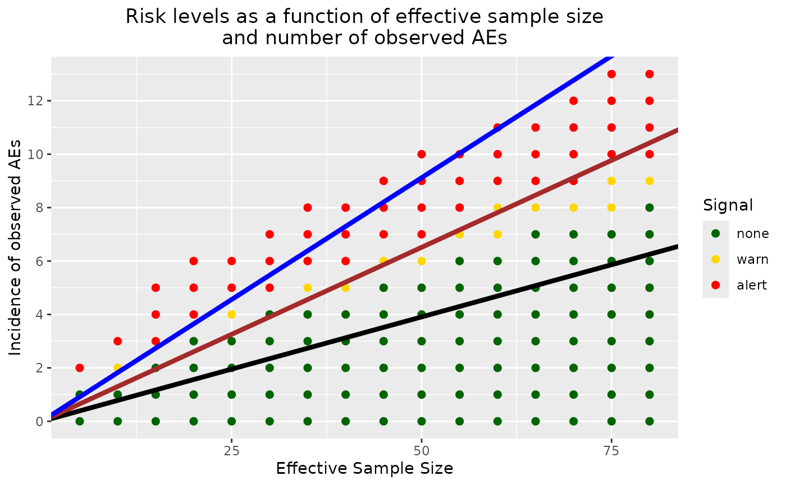

Graphical representation of potential safety signal detection for a given ongoing trial sample size.
Source:R/approx_bssd_graph.R
approx_bssd_graph.RdThis function creates a graph that represents all possible occurrences of observed events for an ongoing trial given a fixed sample size. The x-axis represents the number of participants (also equivalent to time since time can be expressed in a completed-trial-participant unit). The y-axis represents the number of participants with one AE. Risk levels, i.e., Pr(active AE rate > placebo AE rate), are expressed via color coding: green, yellow, and red representing risk levels that would warrant no action, a warning, and an alert, respectively. These three levels are delimited by two thresholds that are set to 80% and 90% by default. This function assumes that all the enrolled patients are completers (no dropout). The threshold levels can be changed.
Usage
approx_bssd_graph(
time,
prob_arm1,
pi1_alpha,
pi1_beta,
pi2_alpha = 0.3,
pi2_beta = 0.3,
num_samples = 50000
)Arguments
- time
numeric, total time at risk (units = study duration). It can also be construed as the actual number of participants in the ongoing trial, and not the effective number of patients. This parameter expects a positive whole number.
- prob_arm1
numeric, probability of being randomized to placebo (arm1).
- pi1_alpha
numeric, first shape param of beta prior distribution on unit-time event probability in placebo (arm1).
- pi1_beta
numeric, second shape param of beta prior distribution on unit-time event probability in placebo (arm1).
- pi2_alpha
numeric, first shape param of beta prior distribution on unit-time event probability in active (arm2).
- pi2_beta
numeric, second shape param of beta prior distribution on unit-time event probability in active (arm2).
- num_samples
integer, number of replication of the simulated samples. More is better, up to a point. The default is 50000 and gives robust estimations of Pr(active AE rate > placebo AE rate). This parameter can be changed to a smaller number to fasten the computation time, but the estimation will be less accurate.
Examples
# Note: Set seed for reproducible graph.
set.seed(2021)
approx_bssd_graph(
time = 80, prob_arm1 = 1 / 3,
pi1_alpha = 151.3025005, pi1_beta = 1784.3675521, pi2_alpha = 0.3,
pi2_beta = 0.3, num_samples = 1000
)
